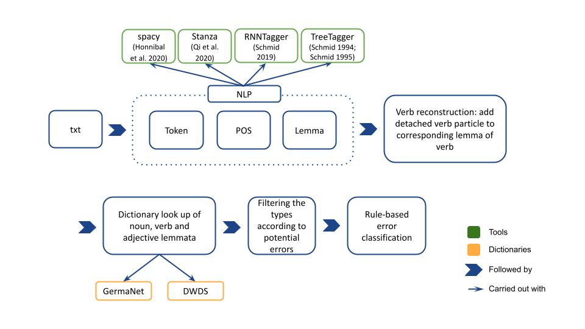
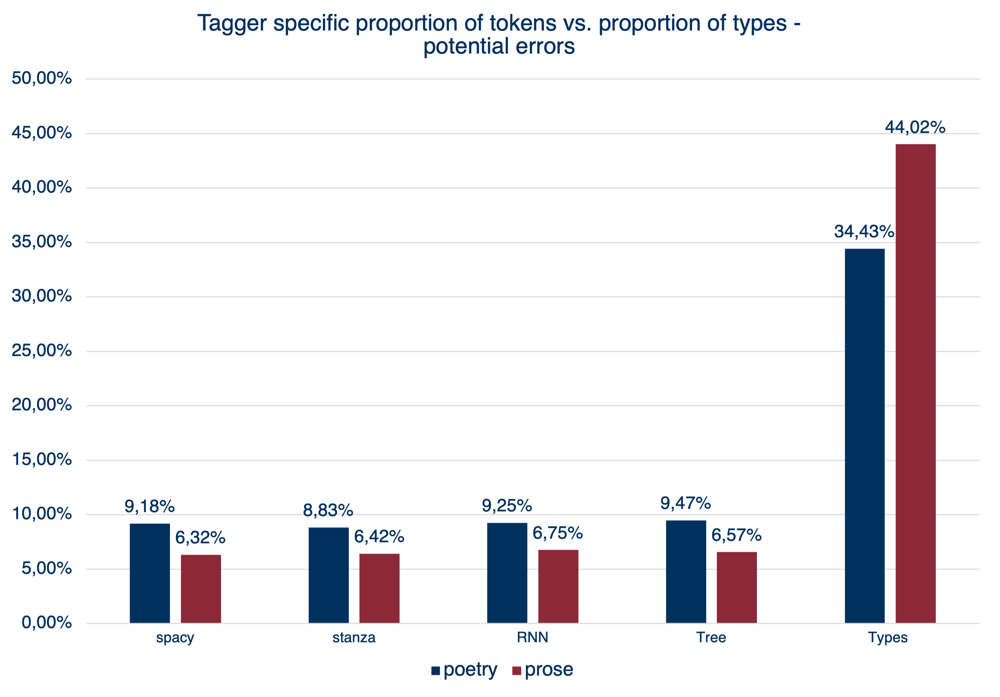
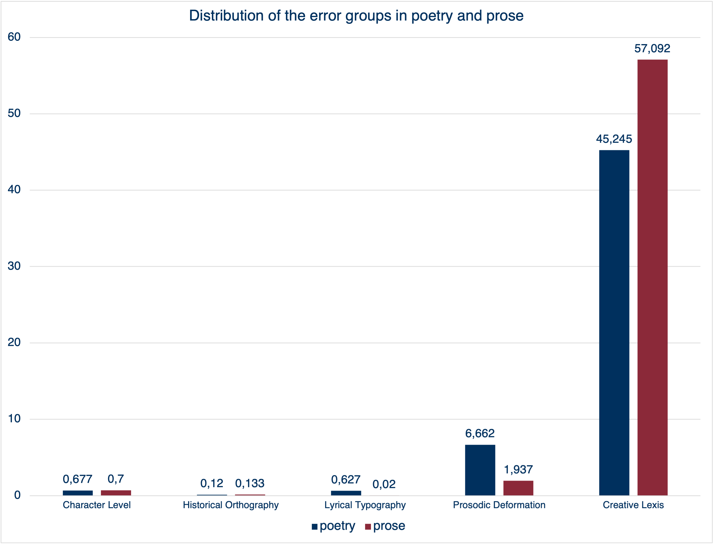

## Poetry as Error #### A **Tool Misuse** Experiment on the Processing of German Language Poetry </br> <hr style="background-color:#8b2939; height: 2px;"/> </br> [Henny Sluyter-Gäthje](mailto:henny.sluyter-gaethje@uni-potsdam.de) und [Peer Trilcke](mailto:trilcke@uni-potsdam.de) </br> DH2022 - Tokyo | 07/27/2022 -- <table> <tr> <td style="font-size: 30px; border-bottom: 0px;" align="left"> <span class="fragment highlight-green" data-fragment-index="1">Ach</span> nur einmal im Leben! - Eduard Mörike<a href="#7"><sup>1</sup></a> </td> <td style="font-size: 30px; border-bottom: 0px;" border: none> <span class="fragment highlight-green" data-fragment-index="1">Ah</span> Just One More Time in Life! - Eduard Mörike<a href="#7"><sup>2</sup></a> </td> <tr> <td style="font-size: 24px; border-bottom:0px; margin-top: 0px;"> Im Fenster jenes alt <span class="fragment highlight-green" data-fragment-index="1">verblichnen</span> Gartensaals </td> <td style="font-size: 24px; border-bottom:0px;"> In the window of a <span class="fragment highlight-green" data-fragment-index="1">faded</span> old garden hall </td> </tr> <tr> <td style="font-size: 24px; border-bottom:0px;"> Die Harfe, die, vom leisen Windhauch angeregt, </td> <td style="font-size: 24px; border-bottom:0px;"> The harp, when stirred by a slight breeze </td> <tr> <td style="font-size: 24px; border-bottom:0px;"> <span class="fragment highlight-green" data-fragment-index="1">L</span>ang <span class="fragment highlight-green" data-fragment-index="1">ausgezogne</span> Töne traurig wechseln <span class="fragment highlight-green" data-fragment-index="1">läßt</span> </td> <td style="font-size: 24px; border-bottom:0px;"> <span class="fragment highlight-green" data-fragment-index="1">E</span>xchanges long <span class="fragment highlight-green" data-fragment-index="1">extended</span> tones of sadness </td> </tr> <tr> <td style="font-size: 24px; border-bottom:0px;"> In ungepflegter <span class="fragment highlight-green" data-fragment-index="1">Spätherbst-Blumen-Einsamkeit</span>, </td> <td style="font-size: 24px; border-bottom:0px;"> In an unattended <span class="fragment highlight-green" data-fragment-index="1">late-autumn flowery solitude</span>, </td> </tr> <tr> <td style="font-size: 24px; border-bottom:0px;"> <span class="fragment highlight-green" data-fragment-index="1">I</span>st schön zu hören einen langen Nachmittag. </td> <td style="font-size: 24px; border-bottom:0px;"> <span class="fragment highlight-green" data-fragment-index="1">Is</span> delightful to hear on a long afternoon. </td> </tr> <tr> <td style="font-size: 24px; border-bottom:0px;"> Nicht völlig unwert ihrer holden Nachbarschaft </td> <td style="font-size: 24px; border-bottom:0px;"> Not wholly unworthy of its lovely place nearby </td> </tr> <tr> <td style="font-size: 24px; border-bottom:0px;"> <span class="fragment highlight-green" data-fragment-index="1">S</span>öhnt auf dem grauen Zwingerturm die Fahne dort, </td> <td style="font-size: 24px; border-bottom:0px;"> A weather vane grates on the gray shelter-tower there </td> </tr> <tr> <td style="font-size: 24px; border-bottom:0px;"> Wenn stürmischer oft die Wolken ziehen überhin. </td> <td style="font-size: 24px; border-bottom:0px;"> When often clouds race by in storms overhead. </td> </tr> </table> <!-- -- ## Plan 1. [Research question](#3) 2. [Analysis](#5) 3. [Results](#6) 4. [Outlook](#7) --> -- <!-- ## 1. Research Question --- --> ### Starting point * Literary texts deviate massively from the standard language used e.g. in newspapers due to their asthetic and historic characteristics * NLP tools are used for preprocessing literary texts but are trained on the newspaper domain </br> → Performance drop on literary texts --- ### Deviance as an approach * Erroneousness of the NLP tools as a computational grasp of the deviant character of literary texts? * Produced errors as characteristics of literary texts? </br> → Provoking errors by processing poetry </br> → __Tool Misuse__ --- ### Operationalisation * Automatic annotation (tokenization, POS-Tagging, lemmatization) of a [poetry](https://gitup.uni-potsdam.de/sluytergaeth/poetry_as_error/) and a [prose corpus](https://gitup.uni-potsdam.de/sluytergaeth/poetry_as_error/) * Problem: No automatic error detection because no available gold standard annotations * Work-around: Check produced lemmas + POS-Tag against dictionaries --- ### Pipeline  <!-- ### Corpora - Distribution of tokens | | Poetry | Prose | |--------|----------|------------| |spacy | 397.924 | 3.967.566 | |stanza | 390.605 | *3.958.315* | |RNN | *390.325* | 3.977.869 | |Tree | **414.395** | **4.276.486** | | | | | |Types | 70.422 | 263.042 | --> --- ### Potential errors  -- ## Analysis --- ### Typing of Errors * [13 rules](https://gitup.uni-potsdam.de/sluytergaeth/poetry_as_error/) to type the pFail-Sets * Application in pre-defined order * Multiple typings not possible --- ### Error groups <table cellspacing="0" cellpadding="0" style="font-size: 60%;"> <tr> <td>Error group</td> <td>Error type</td> <td>Rule example</td> <td>Text example</td> </tr> <tr> <td>Character Level</td> <td>PUNC, SHORT</td> <td>If a word type has only two characters or less, type.</td> <td><span style="color:#8b2939">O</span> wie kenn ich sie so gut!<a href="#7"><sup>3</sup></a></td> </tr> <tr> <td>Historic Orthography</td> <td>ORTH_SZ</td> <td>Replace "ß" in the lemma with "ss" and check in the dictionary; if found in the dictionary, type.</td> <td>Lang ausgezogne Töne traurig wechseln <span style="color:#8b2939">läßt</span><a href="#7"><sup>1</sup></a></td> </tr> <tr> <td>Lyrical Topography</td> <td>ORTH_UPPER</td> <td>If a word type is at the beginning of a line, replace initial capitalisation of ADJ and VERB with lower case and check in the dictionary; if found in the dictionary, type.</td> <td><span style="color:#8b2939">I</span>st schön zu hören einen langen Nachmittag.<a href="#7"><sup>1</sup></a></td> </tr> </table> --- <table cellspacing="0" cellpadding="0" style="font-size: 60%;"> <tr> <td>Error group</td> <td>Error type</td> <td>Rule example</td> <td>Text example</td> </tr> <tr> <td>Prosodic Deformation</td> <td>ELISION_APO, SIMPLE, END, EPITHESIS, CONTRACT</td> <td>If an apostrophe occurs within a word type, type.</td> <td>Im Fenster jenes alt <span style="color:#8b2939">verblichnen</span> Gartensaals<a href="#7"><sup>1</sup></a></td> </tr> <tr> <td>Creative Lexis</td> <td>COMP_DASH, COMP, PART_ADJ, PREFIXED</td> <td>If a word type begins with a prefix from a given list, remove the prefix from the lemma and check the dictionary; if found in the dictionary, type.</td> <td>In ungepflegter <span style="color:#8b2939">Spätherbst-Blumen-Einsamkeit</span>,<a href="#7"><sup>1</sup></a></td> </tr> </table> -- ## Results --- ### Results <table style="font-size: 60%";> <td align=center> <ul> <li>Poetry: 53% of word types could be typologised</li> <li>Prose: 60% of word types could be typologised</li> <li>In prose and poetry: <i>Creative Lexis</i> makes up the biggest source of errors → pipeline errors</li> <li><i>Prosodic Deformation</i> and <i>Lyrical Topography</i> occur increasingly in poetry → lyrical "disturbance"?</li> </ul> </td> <td>  </td> </table> -- ## Future Work --- ### Future Work Improvement of the pipeline wth the help of a gold standard data set * Annotation of token, pos and lemma </br> → What are tool errors? * Annotation of noun, verbs and adjective with deviance information </br> → Do the typed errors actually reveal something about the specificity of literature? -- ## Access <!-- * [Artikel](https://www.dhd2022.de/wp-content/uploads/2022/03/DHd2022_Book-of-Abstracts_Edition-01_2022-03-06_reduziert.pdf) in Book of Abstracts --> * Corpora, code and description of the rules on [GitLab](https://gitup.uni-potsdam.de/sluytergaeth/poetry_as_error) * Tools: * [spacy](spacy.io/) * [stanza](https://stanfordnlp.github.io/stanza/) * [RNNTagger](https://www.cis.uni-muenchen.de/~schmid/tools/RNNTagger/) * [Treetagger](https://www.cis.uni-muenchen.de/~schmid/tools/TreeTagger/) -- ## Bibliography #### Text examples <table cellspacing="0" cellpadding="0" style="font-size: 60%;"> <tr> <td> 1. Eduard Mörike: Brockes.</td> </tr> <tr> <td><a href="http://www.cingolani.com/116em.html">2. Eduard Mörike: Brockes, translated by Charles L. Cingolani, 2014.</a></td> </tr> <tr> <td>3. Johann Wolfgang Goethe: Wilhelm Tischbeins Idyllen.</td> </tr> </table> --- #### References <table cellspacing="0" cellpadding="0" style="font-size: 40%;"> <tr> <td><a href="https://people.ischool.berkeley.edu/~dbamman/pubs/pdf/Bamman_DH_Debates_CompHum.pdf">Bamman, David (2020): “LitBank: Born-Literary Natural Language Processing” [Preprint]</a> [letzter Zugriff 14. Juli 2021].</td> <td>Müller-Zettelmann, Eva (2000): Lyrik und Metalyrik. Theorie einer Gattung und ihrer Selbstbespiegelung anhand von Beispielen aus der englisch- und deutschsprachigen Dichtkunst. Heidelberg: Winter.</td> </tr> <tr> <td>Bers, Anna (2020): “Nachwort” in: Anna Bers (eds.): Frauen | Lyrik. Gedichte in deutscher Sprache. Stuttgart: Reclam 793-851.</td> <td><a href="https://konvens.org/proceedings/2019/papers/KONVENS2019_paper_55.pdf">Ortmann, Katrin / Roussel, Adam / Dipper, Stefanie (2019): “Evaluating Off-the-Shelf NLP Tools for German”</a>, in: Proceedings of the 15th Conference on Natural Language Processing (KONVENS): 212-222 [letzter Zugriff 14. Juli 2021].</td> </tr> <tr> <td>Beutin, Wolfgang et al. (2019): Deutsche Literaturgeschichte. Von den Anfängen bis zur Gegenwart. Berlin: 9. Aufl., Metzler.</td> <td><a href="https://aclanthology.org/K18-2016.pdf">Qi, Peng / Dozat, Timothy / Zhang, Yuhao / Manning, Christopher D. (2018): “Universal dependency parsing from scratch”</a>, in: Proceedings of the CoNLL 2018 Shared Task: Multilingual Parsing from Raw Text to Universal Dependencies, Brüssel: 160-170 [letzter Zugriff 14. Juli 2021].</td> </tr> <tr> <td>Braam, Hans (2019): Die berühmtesten deutschen Gedichte. Auf der Grundlage von 300 Gedichtsammlungen. Stuttgart: 2. Aufl., Kröner.”</td> <td><a href="https://aclanthology.org/K18-2016.pdf">Rayson, Paul / Archer, Dawn / Baron, Alistair / Culpeper, Jonathan / Smith, Nicholas (2007): “Tagging the bard: Evaluating the accuracy of a modern POS tagger on Early Modern English corpora”</a>, in: Proceedings of Corpus Linguistics (CL2007) [letzter Zugriff 14. Juli 2021].</td> </tr> <tr> <td>Fricke, Harald (1981): Norm und Abweichung. Eine Philosophie der Literatur. München: Beck.</td> <td><a href="https://www.cis.uni-muenchen.de/~schmid/tools/TreeTagger/data/tree-tagger1.pdf">Schmid, Helmut (1994): “Probabilistic part-of speech Tagging using decision trees”</a>, in: Proceedings of International Conference on New Methods in Language Processing, Manchester, UK: 154-162 [letzter Zugriff 14. Juli 2021].</td> </tr> </table> --- #### References <table cellspacing="0" cellpadding="0" style="font-size: 40%;"> <tr> <td><a href="https://aclanthology.org/W97-0802.pdf">Birgit / Feldweg, Helmut (1997): “GermaNet - a Lexical-Semantic Net for German”</a>, in: Proceedings of the ACL workshop Automatic Information Extraction and Building of Lexical Semantic Resources for NLP Applications. Madrid: 9–15 [letzter Zugriff 14. Juli 2021]. </td> <td><a href="https://www.cis.uni-muenchen.de/~schmid/tools/TreeTagger/data/tree-tagger2.pdf">Helmut (1995): “Improvements in Part-of-Speech Tagging with an Application to German”i</a>, in: Proceedings of the ACL SIGDAT-Workshop, Dublin, Ireland: 13-25 [letzter Zugriff 14. Juli 2021]. </td> </tr> <tr> <td><a href="http://www.lrec-conf.org/proceedings/lrec2010/pdf/264_Paper.pdf">Verena / Hinrichs, Erhard (2010): “GernEdiT - The GermaNet Editing Tool”</a>, in: Proceedings of the Seventh Conference on International Language Resources and Evaluation (LREC 2010), Valletta, Malta: 2228-2235 letzter Zugriff 14. Juli 2021].</td> <td><a href="https://www.cis.uni-muenchen.de/~schmid/papers/Datech2019.pdf">Helmut (2019): “Deep learning-based morphological taggers and lemmatizers for annotating historical texts”</a>, in: Proceedings of the 3rd international conference on digital access to textual cultural heritage, Brüssel: 133-137 [letzter Zugriff 14. Juli 2021].</td> </tr> <tr> <td><a href="https://zenodo.org/record/3684897#.YO_x1W5CTOQ">J. Berenike (2018). “Praktische Tagger-Kritik. Zur Evaluation des PoS-Tagging des Deutschen Textarchivs”</a>, in: DHd2018: Kritik der digitalen Vernunft. Book of Abstracts. Köln: 287-290 [letzter Zugriff 14. Juli 2021].</td> <td><a href="https://dl.acm.org/doi/abs/10.5555/2018966.2018981">Scheible, Silke / Whitt, Richard J. / Durrell, Martin / Bennett, Paul (2011): “A gold standard corpus of Early Modern German”</a> in: Proceedings of the 5th Linguistic Annotation Workshop: 124–128 [letzter Zugriff 14. Juli 2021]. </td> </tr> <tr> <td><a href="https://doi.org/10.5281/zenodo.1212303">Matthew / Montani, Ines / Van Landeghem, Sofie / Boyd Adriane (2020): spaCy: Industrial-strength Natural Language Processing in Python</a>. Zenodo [letzter Zugriff 14. Juli 2021]. </td> <td>Zymner, Rüdiger (2019): “Begriffe der Lyrikologie” in: Hildebrandt, Claudia et al. (eds.) Lyrisches Ich, Textsubjekt, Sprecher? (= Grundfragen der Lyrikologie, Bd. 1). Berlin: De Gruyter 25-50.</td> </tr> <tr> <td>Klein, Wolfgang / Geyken, Alexander (2010): “Das ‘Digitale Wörterbuch der Deutschen Sprache DWDS’”, in: Lexicographica 26: 79–96.</td> <td></td> </tr> </table>